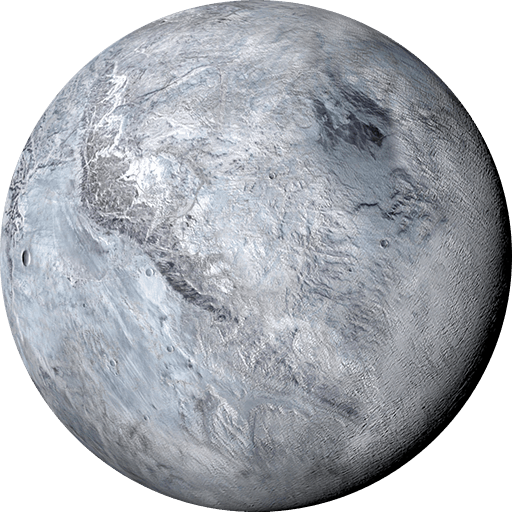
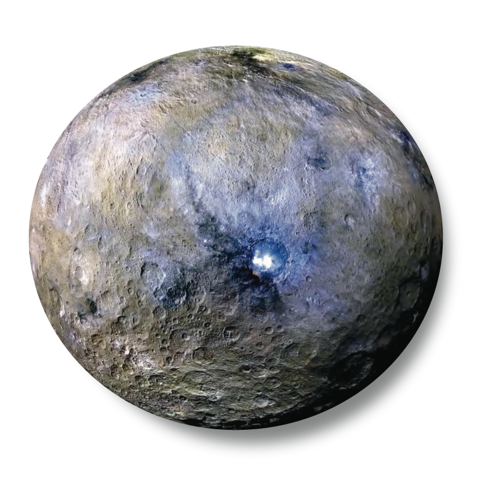
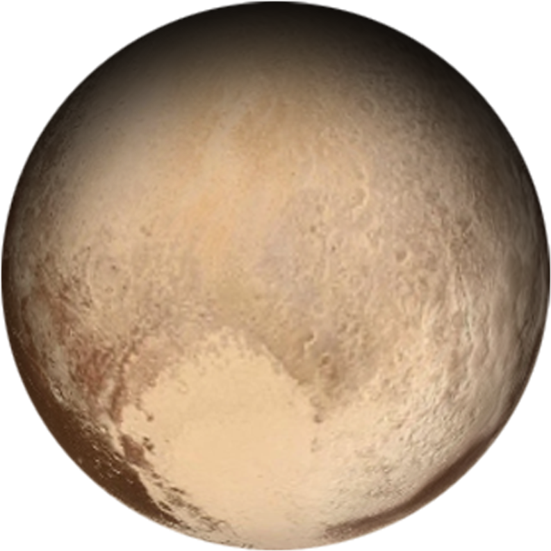
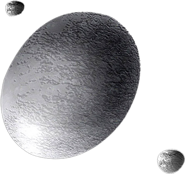
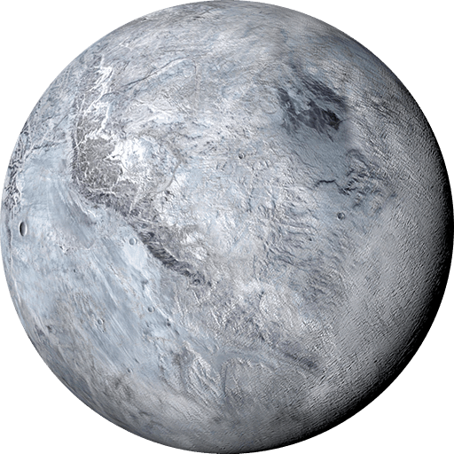
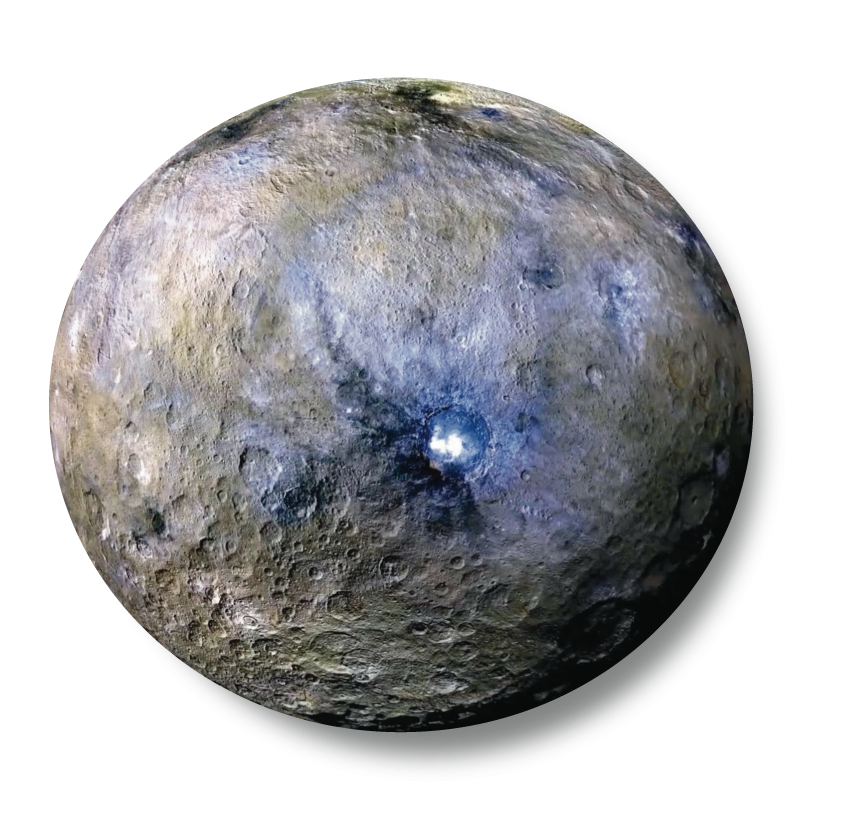
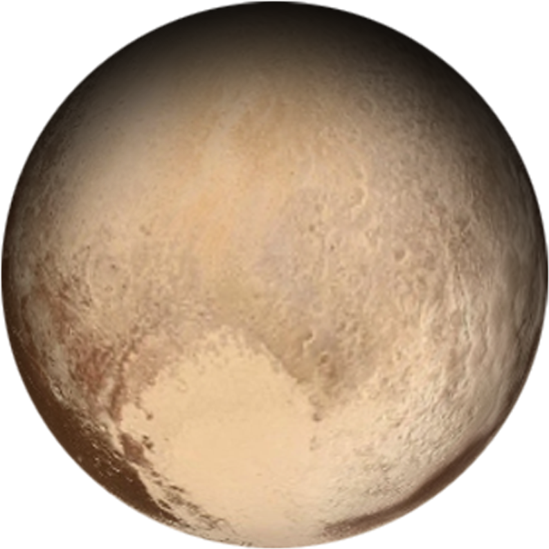
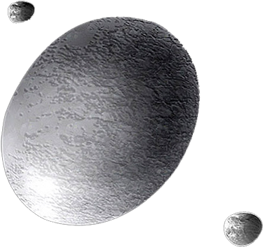

DWARF - The Granules
DWARF - The Granules
 







Dwarf planets are round and orbit the Sun just like the eight major planets. But unlike planets, dwarf planets are not able to clear their orbital path so there are similar objects at roughly the same distance from the Sun. A dwarf planet is much smaller than a planet (smaller even than Earth's moon), but it is not a moon. Pluto is the well known among dwarf planets.
10 Need-to-Know Things About the Dwarf Planets
- Dwarf planets are different from planets because they have not cleared their orbital paths. Planets have enough gravity to push other smaller objects, but dwarf planets do not.
- There are currently only five official dwarf planets namely, Ceres, Pluto, Haumea, Makemake, and Eris. However, there are many other dwarf planet candidates like Gonggong, Orcus, Quaoar, Sedna, and Salacia.
- Days and years vary on dwarf planets. One day on Ceres, for example, takes about nine hours (the time it takes for Ceres to rotate or spin once). Ceres makes a complete orbit around the sun (a year in Ceresian time) in about 4.60 Earth years.
- Dwarf planets are solid rocky and icy bodies. The amount of rock vs. ice depends on their location in the solar system.
- Many, but not all dwarf planets have moons.
- Dwarf planets can also have ring systems. The oddball, Haumea, has a ring surrounding it. It is the first object beyond Neptune's orbit known to have a ring system.
- Dwarf planets Pluto and Eris, for example, have thin atmospheres that expand when they come closer to the sun and collapse as they move farther away.
- The first mission to a dwarf planet was 'Dawn' which is sent to dwarf planet called Ceres.
- Dwarf planets cannot support life due to their atmosphere and geographical factors.
- Pluto was considered a planet until 2006. The discovery of similar-sized planets deeper in the distant Kuiper Belt sparked a debate that resulted in a new official definition of a planet that did not include Pluto.